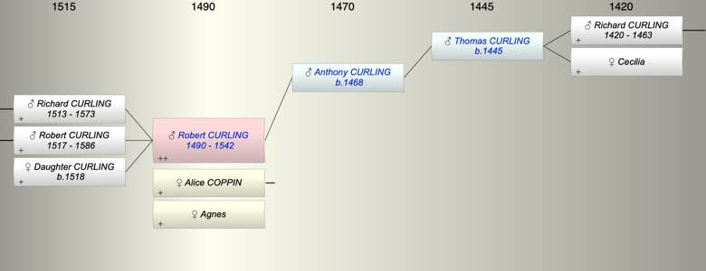

| [Index] |
| Robert CURLING (1490 - 1542) |
|  |
| b. abt 1490 |
| +. (1) Alice COPPIN |
| +. (2) Agnes |
| d. 1542 aged 52 |
| Parents: |
| Anthony CURLING (1468 - ) |
| Siblings (3): |
| Anthony CURLING (1495 - 1564) |
| John CURLING (1495 - 1573) |
| Nicholas CURLING (1498 - 1567) |
| Children (3): |
| Richard CURLING (1513 - 1573) |
| Robert CURLING (1517 - 1586) |
| Daughter CURLING (1518 - ) |
| Grandchildren (11): |
| Bennett CURLING (1545 - ), Avice CURLING (1547 - ), John CURLING (1548 - ), Robert CURLING (1550 - ), Henry CURLING (1558 - 1583), George CURLING (1561 - ), Joan CURLING (1561 - ), Robert CURLING (1562 - ), Margaret CURLING (1565 - ), Mildred CURLING (1567 - ), Anthony CURLING (1568 - ) |
| Events in Robert CURLING (1490 - 1542)'s life | |||||
| Date | Age | Event | Place | Notes | Src |
| abt 1490 | Robert CURLING was born | ||||
| abt 1513 | 23 | Birth of son Richard CURLING | |||
| abt 1517 | 27 | Birth of son Robert CURLING | |||
| abt 1518 | 28 | Birth of daughter Daughter CURLING | |||
| 1542 | 52 | Robert CURLING died | |||
| Personal Notes: |
| He was of SL and owned tenements named Howlet Dane and Chilton, and part of a house at St Paul's without the Walls, Canterbury. His will dated 28 March 1542 was proved 24 April 1542 [A22/116]. He refers to his wife Agnes, sons Richard and Robert and brothers Anthony, Nicholas and John. |
| Created on a Mac™ using iFamily for Mac™ on 8 Oct 2023 |